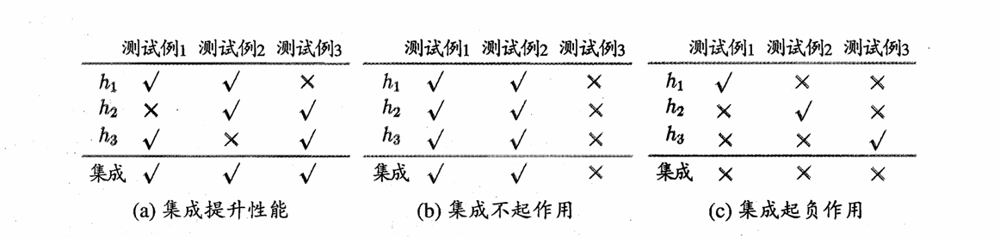
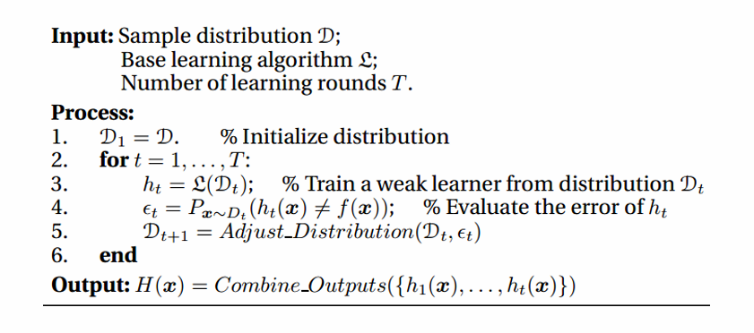
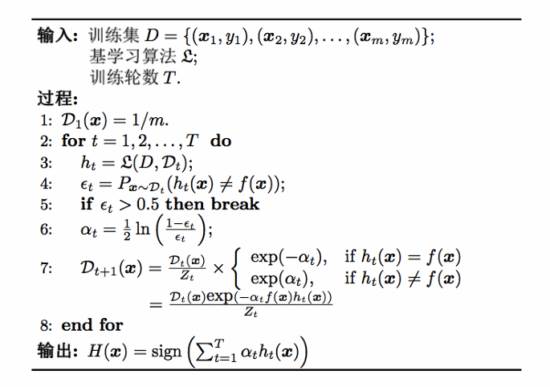
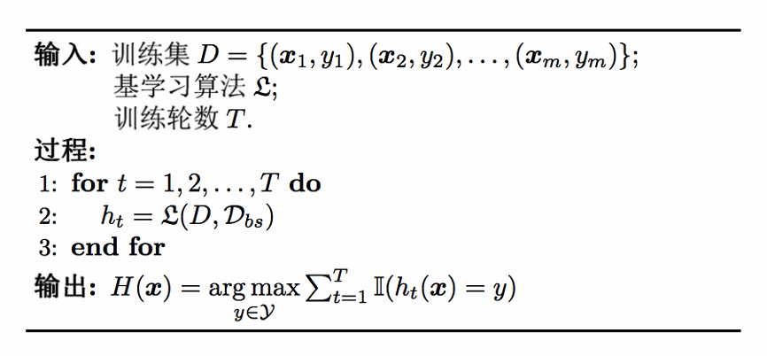
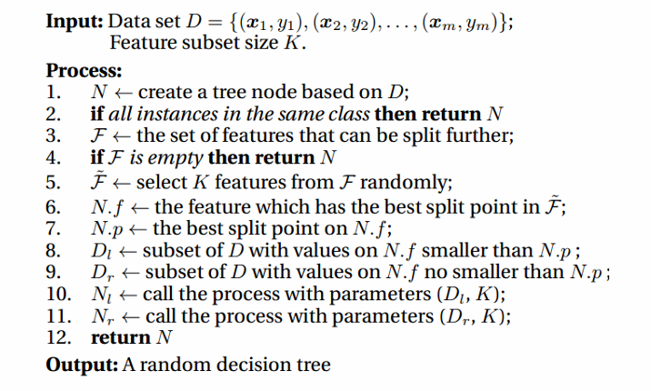
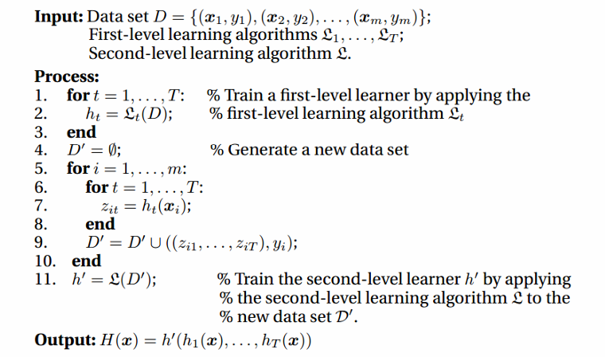

Chapter8 集成学习
For Exam
Boosting、Bagging、Random Forest 只需要了解概念就行
个体与集成
集成学习（ensemble learning） 通过构建并结合多个学习器来提升性能。
例如二分类问题，三个分类器在三个测试样本上的预测结果如下表所示，√ 表示预测正确，× 表示预测错误。若集成学习基于少数服从多数的原则来结合：

进行分析：若有标签 $y\in{-1,+1}$ 和真实函数 $f$，假定个体分类器的错误率为 $\epsilon$，那么对于每个个体分类器 $h_i$ 有
$$P(h_i(x)\neq f(x))=\epsilon$$
设有 $T$ 个个体学习器，则集成分类器 $H$ 预测的标签为
$$H(x)=\text{sign}[\sum\limits_{i=1}^Th_i(x)]$$
如果个体学习器相互独立，那么集成的错误率为
$$P(H(x)\neq f(x))=\sum\limits_{k=0}^{\lfloor\frac{T}{2}\rfloor}C_T^k(1-\epsilon)^k\epsilon^{T-k}\leqslant (1-2\epsilon)^T$$
上式表明，个体学习器数量增大，集成的错误率会以指数级下降，最终趋于 $0$。
这个例子可以看出，个体学习器要有一定的准确性（c 为反例），且彼此之间要有差异性（b 为反例），即好而不同。
Boosting
Boosting 是一族算法，机制是：
- 先从初始训练集训练出一个个体学习器
- 再根据其表现对训练样本分布进行调整，使得先前学习出错的样本在后续获得更多关注
- 接着在调整后的样本分布上训练下一个个体学习器
- 以此类推，直到达到预定的个体学习器数量
- 最后，将所有个体学习器加权集成

AdaBoost
AdaBoost 算法基于加性模型（个体学习器线性加权）
$$H(x)=\sum\limits_{t=1}^T\alpha_t h_t(x)$$
来最小化指数损失函数
$$l_{\exp}(H|D)=E_{x\sim D}[e^{-f(x)H(x)}]$$
其中，标签取值 ${-1,+1}$，$f(x)$ 为样本 $x$ 的真实标记，$T$ 为个体学习器数量，$D$ 为训练集。
为什么要最小化指数损失函数？
若 $H(x)$ 能使 $l_{\exp}(H|D)$ 最小化，则
$$\frac{\partial l_{\exp}}{\partial H}=-e^{-H(x)}P(f(x)=1|x)+e^{-H(x)}P(f(x)=-1|x)=0$$
$$H(x)=\frac{1}{2}\ln\frac{P(f(x)=1|x)}{P(f(x)=-1|x)}$$
因此：
$$\text{sign}(H(x))=\begin{cases} 1 & P(f(x)=1|x) > P(f(x)=-1|x)\ -1 & P(f(x)=1|x) < P(f(x)=-1|x) \end{cases}=\argmax\limits_{y\in{-1,1}}P(f(x)=y|x)$$
这意味着此时 $\text{sign}(H(x))$ 达到了贝叶斯最优错误率。也说明，如果指数损失函数取最小，则分类错误率也取最小。
如何最小化指数损失函数？（确定个体分类器的权重）
第一个个体学习器 $h_1$ 直接从 $D$ 中学得。此后迭代生成 $h_t$ 和 $\alpha_t$。当 $h_t$ 基于分布 $D_t$ 产生后，对应权重 $\alpha_t$ 应使得 $\alpha_th_t$ 能最小化指数损失函数（对应的分量）。
设 $h_t$ 的错误率 $\epsilon_t=P_{x\sim D_t}(h_t(x)\neq f(x))$，有
$$l_{\exp}(\alpha_th_t|D_t)=E_{x\sim D_t}[e^{-f(x)\alpha_th_t(x)}]=(1-\epsilon_t)e^{-\alpha_t}+\epsilon_te^{\alpha_t}$$
对 $\alpha_t$ 求导并令导数为 $0$，可得：
$$\alpha_t=\frac{1}{2}\ln(\frac{1-\epsilon_t}{\epsilon_t})$$
对应算法第 6 行的分类器权重更新公式。
如何调整样本分布？
在获得 $H_{t-1}$ 之后，样本分布要进行调整，使得 $h_t$ 能纠正 $H_{t-1}$ 的错误。理想情况下能纠正全部错误，即最小化
$$l_{\exp}(H_{t-1}+h_t|D)=E_{x\sim D}[e^{-f(x)(H_{t-1}(x)+h_t(x))}]$$
对 $e^{-f(x)h_t(x)}$ 进行二阶泰勒展开（注意 $f^2(x)=h_t^2(x)=1$）：
$$l_{\exp}(H_{t-1}+h_t|D)\approx E_{x\sim D}[e^{-f(x)H_{t-1}(x)}(1-f(x)h_t(x)+\frac{f^2(x)h_t^2(x)}{2})]=E_{x\sim D}[e^{-f(x)H_{t-1}(x)}(1-f(x)h_t(x)+\frac{1}{2})]$$
于是，理想的个体学习器
$$ \begin{align} h_t(x) & =\argmin\limits_{h}l_{\exp}(H_{t-1}+h|D)\ & =\argmin\limits_{h}E_{x\sim D}[e^{-f(x)H_{t-1}(x)}(1-f(x)h_t(x)+\frac{1}{2})]\ & =\argmax\limits_{h}E_{x\sim D}[e^{-f(x)H_{t-1}(x)}f(x)h(x)]\ & =\argmax\limits_{h}E_{x\sim D}[\frac{e^{-f(x)H_{t-1}(x)}}{E_{x\sim D}[e^{-f(x)H_{t-1}(x)}]}f(x)h(x)] \end{align} $$
其中，$E_{x\sim D}[e^{-f(x)H_{t-1}(x)}]$ 为常数。令 $D_t$ 表示一个分布：
$$D_t(x)=\frac{D(x)e^{-f(x)H_{t-1}(x)}}{E_{x\sim D}[e^{-f(x)H_{t-1}(x)}]}$$
那么，由重要性采样：
$$h_t(x)=\argmax\limits_{h}E_{x\sim D_t}[f(x)h(x)]=\argmin\limits_{h}E_{x\sim D_t}[(f(x)\neq h(x))]$$
由此可见，最理想的 $h_t$ 在分布 $D_t$ 下能最小化分类误差，因此要基于 $D_t$ 来训练 $h_t$。$D_t$ 和 $D_{t+1}$ 的关系为
$$\begin{align} D_{t+1}(x) & = \frac{D(x)e^{-f(x)H_{t}(x)}}{E_{x\sim D}[e^{-f(x)H_{t}(x)}]}\ & =\frac{D(x)e^{-f(x)H_{t-1}(x)e^{-f(x)\alpha_th_t(x)}}}{E_{x\sim D}[e^{-f(x)H_{t}(x)}]}\ & =D_t(x)\cdot e^{-f(x)\alpha_th_t(x)}\frac{E_{x\sim D}[e^{-f(x)H_{t-1}(x)}]}{E_{x\sim D}[e^{-f(x)H_t(x)}]} \end{align}$$
对应算法第 7 行的样本分布更新公式。

Bagging 与随机森林
想要得到泛化性能强的集成，个体学习器应尽可能相互独立，一个可能的做法是对训练样本进行采样，产生多个子集，分别训练个体学习器。但是，我们同样希望每个个体学习器的性能不能太差，如果子集太小则不足以进行有效学习。综上，我们可以考虑相互有重叠的采样子集。
Bagging:
- 个体学习器不存在强依赖关系
- 并行生成
- 自主采样
从初始训练集中有放回地抽取多个样本，这样就形成了一个训练子集。形成多个训练子集后，在每个子集上独立地训练一个个体学习器。
集成时，对于分类任务使用简单投票法，对于回归任务使用简单平均法。

设个体学习器的复杂度为 $O(m)$，集成复杂度为 $O(s)$，则 Bagging 的整体复杂度为 $T\cdot(O(m)+O(s))$。由于 $O(s)$ 和 $T$ 不会太大，因此整体复杂度与个体学习器的复杂度同阶。
包外估计（Out-of-Bag Estimate）：
由于每个个体学习器只使用了部分训练样本进行训练，因此剩余的样本可以作为验证集评估性能。
令 $D_t$ 表示 $h_t$ 实际使用的训练样本集合，令 $H^{oob}(x)$ 表示对样本 $x$ 的包外估计，若仅考虑未使用 $x$ 训练的 $h_t$ 在 $x$ 上的预测，则有
$$H^{oob}(x)=\argmax\limits_{y\in\mathcal{Y}}\sum\limits_{t=1}^TI(h_t(x)=y)\cdot I(x\notin D_t)$$
Bagging 整体泛化误差的包外估计
$$\epsilon^{oob}=\frac{1}{|D|}\sum\limits_{(x,y)\in D}I(H^{oob}(x)\neq y)$$
随机森林（Random Forest）：
随机森林是 Bagging 的一种特殊形式，除了训练样本的随机采样外，还对特征进行随机采样，然后使用决策树作为个体学习器。

结合策略
不同个体学习器的预测结果如何结合？
平均法：
- 简单平均法：$H(x)=\frac{1}{T}\sum\limits_{t=1}^T h_t(x)$
- 加权平均法：$H(x)=\sum\limits_{t=1}^Tw_t h_t(x)$
投票法：
- 绝对多数投票法：若某标记得票超过半数，则预测为该标记；否则拒绝预测
- 相对多数投票法：预测为得票最多的标记，若并列则随机选取
- 加权投票法：每个个体学习器有权重，票数需要加权
学习法：
用另一个学习器来结合各个个体学习器的预测结果。
学习法的典型代表是 Stacking，其机制是：
先从初始数据集中训练出个体学习器，然后生成新的数据集用来训练用于结合的学习器。新数据集的样例输入特征是个体学习器的输出，新数据集的样例标记依然是原始数据集的样例标记。

多样性
误差-分歧分解
分歧（Ambiguity）：
分歧表征了个体学习器在样本 $x$ 上的不一致性，即多样性。
对于某个样本 $x$，个体学习器的分歧：
$$A(h_i|x)=[h_i(x)-H(x)]^2$$
集成的分歧：
$$\overline{A}(h|x)=\sum\limits_{t=1}^Tw_iA(h_i|x)=\sum\limits_{t=1}^T w_i[h_t(x)-H(x)]^2$$
误差：
对于某个样本 $x$，个体学习器的误差：
$$E(h_i|x)=[f(x)-h_i(x)]^2$$
集成的误差：
$$E(H|x)=[f(x)-H(x)]^2$$
误差-分歧分解：
令
$$\overline{E}(h|x)=\sum\limits_{t=1}^T w_t E(h_t|x)$$
表示个体学习器误差的加权，则有：
$$\overline{A}(h|x)=\overline{E}(h|x)-E(H|x)$$
Note
这里利用了 $H(x)=\sum\limits_{t=1}^T w_t h_t(x)$
上式对于所有样本 $x$ 均成立，令 $p(x)$ 表示样本概率密度，则在全样本上有
$$\sum\limits_{t=1}^Tw_t\int A(h_i|x)p(x)dx=\sum\limits_{t=1}^Tw_t\int E(h_i|x)p(x)dx-\int E(H|x)p(x)dx$$
个体学习器在全样本上的泛化误差、分歧项和集成在全样本上的泛化误差分别为
$$E_i=\int E(h_i|x)p(x)dx$$
$$A_i=\int A(h_i|x)p(x)dx$$
$$E=\int E(H|x)p(x)dx$$
再令 $\overline{E}=\sum\limits_{i=1}^Tw_iE_i$ 表示个体学习器泛化误差的加权均值，$\overline{A}=\sum\limits_{i=1}^Tw_iA_i$ 表示个体学习器分歧的加权均值，则有
$$E=\overline{E}-\overline{A}$$
该式表明：个体学习器精确性越高、多样性越大，则集成的效果越好。
多样性度量 Diversity Measure
多样性度量也能表征个体学习器的多样化程度，典型做法是考虑两两个体学习器之间的相似程度。
个体学习器 $h_i$ 和 $h_j$ 的预测结果列联表（contingency table） 为
| $~$ | $h_i=+1$ | $h_i=-1$ |
|---|---|---|
| $h_j=+1$ | a | c |
| $h_j=-1$ | b | d |
$a+b+c+d=m$，分别表示对应样本数目。根据预测结果列联表，下面是一些常见的多样性度量。
不合度量（disagreement measure）：
$$dis_{ij}=\frac{b+c}{m}$$
值越大，多样性越大。
相关系数（correlation coefficient）：
$$\rho_{ij}=\frac{ad-bc}{\sqrt{(a+b)(a+c)(c+d)(b+d)}}$$
若 $h_i$ 和 $h_j$ 正相关，则值为正；负相关则值为负；不相关则值为 $0$。
Q-统计量（Q-statistic）：
$$Q_{ij}=\frac{ad-bc}{ad+bc}$$
$\kappa$-统计量（kappa-statistic）：
$$p_1=\frac{a+d}{m}$$
$$p_2=\frac{(a+b)(a+c)+(c+d)(b+d)}{m^2}$$
$$\kappa=\frac{p_1-p_2}{1-p_2}$$